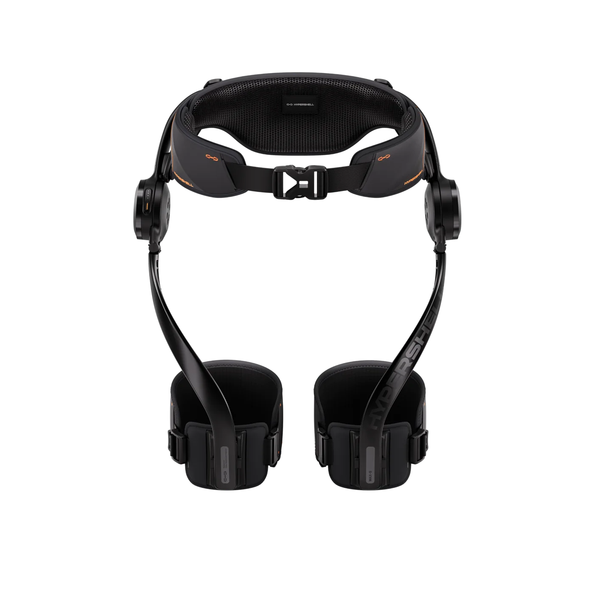
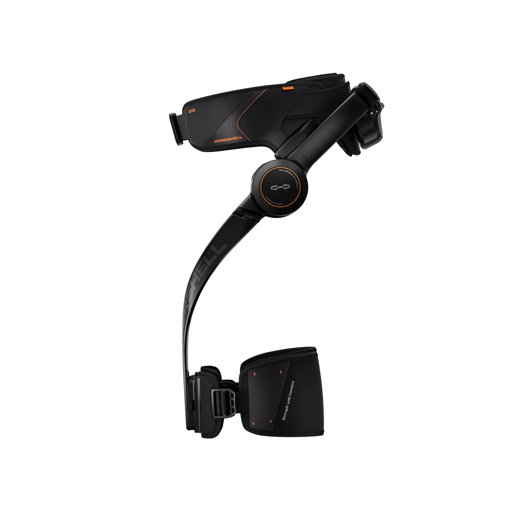

01 / REFLEX
反射
FLY-REFLEX
每一帧都在检查运动边界。异常出现时，由确定性规则立即减弱输出或急停。
180 Hz安全边界
从感知身体，到决定动作，再到记住每一次真实世界的反馈。Ghost 为 Hypershell X Max S 构建一套可观察、可解释、可接管的智能控制系统。

真正的智能，不止是给出一个动作。
它知道什么时候该行动，什么时候该停下。
转动模型，观察外骨骼的结构。播放桌面实测记录，查看双髋角度如何驱动 3D 姿态。
3D 外形依据获准使用的 Hypershell 官方产品图制作。历史数据来自真实设备的桌面标定记录；模型姿态为可视化演示，不用于设备运动控制。
让不同速度的判断，各司其职。从毫秒级保护，到策略选择，再到经验积累。
FLY-REFLEX
每一帧都在检查运动边界。异常出现时，由确定性规则立即减弱输出或急停。
JEV-DECIDE
观察一段运动窗口，判断当前适合的策略；信心不够时，保持现状。
EVOMAP-GENES
遇到问题时检索验证过的处置经验，让每一次排查都能成为下一次的线索。
在本机产品工作区里，把设备监看、运动模式和个人记录连成完整体验。
断线后持续查找设备，收到新数据即恢复曲线。重新连接后原策略回到松劲，安全等待结束后可重新选择动作；控制始终经过斜坡、限幅和急停保护。
查看设备的实时角度与指令力矩。助力、锻炼预设由你手动选择，设备就绪后才可开始。
收录设备记录，回看有效活动时间、双侧幅度与指令做功估计。桌面调试与穿戴运动分别标识，重复记录不会重复累积。
把偏好、使用感受和每次参数调整保存在本机。历史版本随时可查，个人档案可以导出，保存参数不会自动施力。
从第一步、三日同行，到一小时积累、左右同行。四枚徽章只依据完整真实穿戴活动计算，桌面、仿真与静止记录不计进度。
产品工作区在本机运行，默认只读查看。运动控制需在本机另行启用；iPhone 端已开放 TestFlight 内测，新增扫描 Mac 配对码并在手机保存连接信息。扫码流程已在模拟器验证，真机连接与控制仍待验证。本展示页不访问设备或私人档案。
查看产品代码串口会中断，传感器会失联，判断也可能不确定。因此系统保留设备状态、指令来源与安全边界，让每次行动都有迹可循。

HYPERSHELL X MAX S / SIDE VIEW四个独立开源模块与外骨骼主项目共同组成 Ghost。查看代码、复现实验，或沿着自己的方向继续构建。